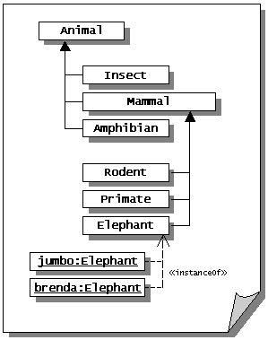
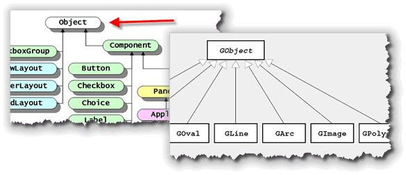
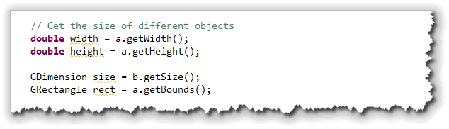

Now that you know how to create an
ACM
Now that you know how to create an
ACM GraphicsProgram,
let's take a look at some of the different components,
from the hierarchy of ACM classes on the right, that you
can use to create your own masterpieces. Since there
are so many classes, though, we'll only cover a few.
We looked at the GLabel class in the last chapter.
In this chapter we want to look at:
- the
GObjectclass that provides the basic behavior that all graphical objects share. - the classes that replace the primitive
Graphicsclass drawing operations you used in the last unit. This includesGLine,GRect,GOvalandGArc, as well as the ACM "measuring classes",GPoint,GRectandGDimension.
Let's start by looking at the GObject class first,
since it contains fields and methods that are common to
all of the other classes.
The ACM Graphics Class Hierarchy
As you know, similar classes are often placed in packages
in Java. Thus, to use the graphical objects in the ACM library,
you import the classes in the acm.graphics
package.
While packages are important to get your program to run, to really understand what an object can do, you have to understand its class hierarchy. A class hierarchy is based on the object-oriented facility known as inheritance, which you were introduced to earlier.
With inheritance, classes are arranged in a sort of parent-child-grandchild structure, that looks a lot like the taxonomies you'd meet in a biology class, and for much the same reason. In the different "levels" have different names, like "kingdom", and "phylum". In object-oriented programming, we have a simpler set of terms.

Animals and Insects
Here's an example from the "real world." Suppose that all of the
animals in the world could be lumped together into the class
Animal. If we took all of the animals and divided
them into different groups, we might find that some were
mammals, (which we'd assign to the Mammal class),
some were insects, etc. Each of these groupings would be a
subset of the entire class of Animal.
Such a subset (Mammal, Insect,
Amphibian) is called a subclass, and, as
you might expect, the superset (Animal) is
called the superclass.
This relationship is called an is-a relationship because
if an object belongs to a subclass, (brenda and
jumbo in the Elephant class, for instance),
that object is simultaneously a member of each of all
its ancestor classes as well. Thus, we can say that
Jumbo "is-a" Elephant, but, by virtue of
being an Elephant, he is, simultaneously, a
Mammal and an Animal as well.
UML Notes
The diagram here is a simplified UML, or Unified Modeling Language
diagram. UML is the "blueprint" language for object-oriented programming.
The arrows in the diagram shown here specify
class relationships. The upward-pointing arrow going from
Insect, Mammal, and Amphibian,
says that these three classes are subclasses of Animal,
or, more technically, that Animal is a generalization
of the other three classes.
The dotted lines with the lighter arrowhead, connecting
jumbo and brenda with the Elephant
class indicate that jumbo and brenda are objects
created from the class. The «instanceOf»
notation appearing to the right of the lines is called a
stereotype and is a required part of the notation.
The GObject Class
With inheritance, all subclasses automatically inherit the behavior and attributes of their parent or superclasses. That means, if we have several classes that have a common method, or common attributes, we can place those methods and attributes in a superclass, and then they can be shared by all the descendent classes.
In the Java class libraries, the root class that all other
classes are derived from is named Object. Whenever you
create a new class, and don't have an extends clause
in the class header, your new class implicitly extends the
Object class.

In a similar way, theGObject class is the root class
for the visible classes in the ACM Graphics package. It contains the
methods and attributes common to all of the visible graphical objects
you'll be using in this unit.
To illustrate each of these methods, I'll use a simple (and fairly useless) program named GObjectMethods that you'll find in this chapter's code folder.
Creating GObjects
The GObject class itself is abstract. That
means that your programs cannot actually create an instance
of the GObject class. Instead, your programs will
create objects from the concrete subclasses such as
GOval or GRect().
Even though you can't create GObject objects,
your program may create GObject variables,
as long as they refer to an object created using one of the
subclass constructors, like this:
 When you pass the
When you pass the GObject variables a
and b to the GraphicsProgram's
add() method, each individual shape object is
placed on the surface of the program's central canvas, like
this.
When you do this, you can use any of the GObject
methods with the variables a and b.
You cannot, however, use any methods that are specific to the
GRect or GOval classes, even though
a refers to a GRect object and
b refers to a GOval object.
You can also create methods that take GObject
parameters, and then pass any kind of ACM graphical
object to it like this:
public void center(GObject obj) ...
Drawing Colors
Some graphical object represent closed shapes, like rectangles
and ovals, while some are not closed, like lines. Those that
are closed can be filled with a solid color. Since not all
objects can be filled, though, the GObject class
does not have a setFillColor() method.
All graphical objects can change the color used to draw
their outline, however. You change that by using the setColor()
method like this:
 The ACM graphical shapes do not have
The ACM graphical shapes do not have setBackground()
and setForeground() methods, like the traditional
Java component system has. However, you can add an init()
method to your GraphicsProgram, and call its
setBackground() method to change the background color
for the canvas used by your program.
The Color class is not one of the ACM graphics
classes, so to use the class in your program, you need to remember
to add one of these two import statements to your
code:
import java.awt.*; // import all AWT classes
import java.awt.Color; // import the Color class
GObject Coordinates
ACM Graphics objects use the same basic coordinate system that
you met earlier, when you learned about applets. Like
applets, the origin (position 0, 0) is in the upper left
corner. X, or horizontal locations increase as you move to the right,
while Y, or vertical locations increase as you move down. (Remember
that this is a little different than the Cartesian coordinates
you learned in geometry!)
 Each x,y coordinate pair represents a pixel on the
screen. However, with ACM graphical objects, this coordinate
pair is stored as
Each x,y coordinate pair represents a pixel on the
screen. However, with ACM graphical objects, this coordinate
pair is stored as double values, instead of the
ints used in the traditional Java graphics model.
ACM GObjects all store their location, width and
height as doubles. When the different objects are
actually drawn on-screen, though, each of these values is
automatically converted to an int, because we
can't actually paint a line that falls between two pixels
on the screen.
You normally won't need to worry about this difference at all;
the only practical effect is to reduce the amount of work that
you have to do when a shape calculation involves double
values (which is extremely common when using the Math
functions.).
Measuring Classes
In a previous chapter, you met the three Java AWT "measuring"
classes: Point, Dimension and
Rectangle. Each of these three simple classes
contains public int fields that are used to
measure the size of a graphical component, such as the
width and height of the screen.
Since ACM GObjects use double
coordinates, the ACM graphics package also includes replacements
for these three classes. The replacement
classes—GPoint, GDimension and
GRectangle—are identical to the other
measuring classes except that their fields are doubles
not ints.
Location
There are a variety of methods that allow you to change the size and location of an object, as well as those that allow you to retrieve the location or size of an object.
There are three methods that will get the 2-dimensional coordinates
or location of an object:
 As you can see, we can get the individual coordinates as
As you can see, we can get the individual coordinates as
doubles, or both together as a GPoint.
To display the GPoint, the example here just uses
its toString() method.
There are four methods to change the location of an
object in the two-dimensional plane:
 Here's what the methods do:
Here's what the methods do:

- The
setLocation(x, y)andsetLocation(p)methods both move the object to the absolute position specified by theirdoubleorGPointparameters. In the example here,a.setLocation(pt)moves theGObject a(the rectangle), down so that it has the same origin as the oval. The lineb.setLocation(0, 0);moves the oval (b) to the upper-left corner. - The
move()andmovePolar()methods use the object's current position when calculating its final resting place. In the example here,b.move(50, 50);adds 50 to both thexandyfields in the oval object,b. The linea.movePolar(100, 120);moves the rectangle 100 units toward the origin, which is (roughly) 120 degrees.
Once these lines have run, the objects should be located on the canvas in this position. (Note that the location printed on the canvas is for the original location, not the updated location.)
Z Order
There are also four methods that allow you to change the location of the object in the depth or "Z" dimension. This is known as the object's stacking order.
obj.sendToFront(); // put in front of all other objects
obj.sendToBack(); // put behind all other objects
obj.sendForward(); // move one layer closer to user
obj.sendBackward(); // move one layer further from user
Obviously, with a 2-dimensional display, you can't actually change the depth of any object. What you can adjust, however, is the object's apparent location, by changing the overlapping of different objects as they are drawn. Those objects that are "closer" to the viewer are drawn "on top" of those that appear further away.
Here's a picture from the ACM JTF Tutorial, showing what would
happen if you used the statement oval.sendBackward();
to the picture below:

Shape Size
Finally, there are four methods that allow you to obtain the
size of an object:

Here's how these methods work:- The
getHeight()andgetWidth()methods return the height and width of the object as adouble. - The
getSize()method returns both the width and height, wrapped up in aGDimensionobject. - The
getBounds()method returns the size of the object, as well as its location, all wrapped up in aGRectangleobject.
Location at Work
In the MyFirstAcmGuiApp program, we positioned the
GLabel object, helloLabel, by supplying
two additional arguments representing the horizontal, or x
location (measured from the left-hand side of the program's
window), and the vertical, or y location, measured
from the top of the window.
Most of the components in the acm.graphics package
use similar x-y coordinates to position themselves, using the
upper-left corner of the component as the origin. The
GLabel class acts a little differently. Instead
of using the upper-left corner for the origin, GLabel
uses the left-hand side of the text, and the baseline as
shown in this figure:
 You can find out if any letters in your label are "hanging down" (like
a lowercase p, q, or j would do), by calling the method
You can find out if any letters in your label are "hanging down" (like
a lowercase p, q, or j would do), by calling the method
getDescent(). Similarly, you can find the height of the tallest
character above the baseline using the getAscent()
method.
Setting the Position
You've already seen how you can supply the x,y parameters when
constructing the object, or, when calling the add()
method. We could have done this as well:
GLabel helloLabel = new GLabel("Hello, I love you!");
add(helloLabel);
helloLabel.setLocation(25, 25);
All three of these techniques have the effect of changing the
x,y values stored in the object helloLabel. When the
state of the object changes, its display on screen changes
to reflect its new state.
Centering Objects
 One thing you may want to do, is to center a label or other
graphical component. This is easy to do in a console application,
because you know the length of each
One thing you may want to do, is to center a label or other
graphical component. This is easy to do in a console application,
because you know the length of each String, and
all you need is a loop and some simple logic.
With graphical applications, though, it's much, much more
difficult. In the MyFirstJavaApplet program we had
to repeatedly adjust the x,y values used by drawString()
to get the text to appear in the correct location. Then, when we
changed the font size, everything got messed up again.
The good news is, that with graphical objects, centering and other positioning is as simple conceptually and arithmetically, as it was with console applications. All you need to do is:
- Divide the width and height of the program window in half. This gives you the center of the screen.
- Divide the width of the
GLabelobject in half as well. Subtract half the label width from the center point for the x argument. The y argument is a little harder. What seems to work best visually is to add one quarter of the label height to the center point for the y argument. Note that this means the y argument will always be below the window center point, because the label's origin is at the baseline, not the upper-left corner of the text.
To find the width or height of the program window or of the
helloLabel variable, use the getWidth()
and getHeight() methods. For the width of the program
window, you'll leave the receiver portion empty, or use the
keyword this.
Here's an the example that centers the phrase horizontally and vertically as shown in the screenshot at the beginning of this section.
double width = this.getWidth(); // or skip the this
double height = getHeight();
double widthLbl = helloLabel.getWidth();
double heightLbl = helloLabel.getHeight();
helloLabel.setLocation(width/2 - widthLbl/2, height/2 + heightLbl/4);
Drawing Lines with GLine
If you look at the screenshot from the last section, you'll see
that I've also drawn a few lines so you can see the visual effect
of centering your text. Rather than using the drawLine()
method, though, I've used the ACM GLine class.
To construct a GLine object, you pass in four
values that represent the end-points of the line segment:
x1, y1 for the start of the line,
and x2, y2 for the third and fourth
arguments, and the position where the line ends.
Given the variables defined in the previous section, here
are the instructions to create a GLine object
named topLine and add it to the program:
GLine topLine =
new GLine( 0, height/2 - heightLbl/2, // x1, y1
width,
height/2 - heightLbl/2); // x2, y2
add(topLine);
Note that x1 is 0, the left-hand side of the screen,
and x2 is width, which is the right-hand side
of the screen. Both y1 and y2 have the
same values, calculated by finding the vertical center of the screen
(height/2) and then subtracting half the height of the
GLabel object (heightLbl/2). Because both
y parameters are the same, the result is a horizontal line.
The horizontal and vertial center lines, and the horizontal line falling below the text were all created and placed using similar calculations.

Meet the GObject Summary
- The ACM graphical shapes belong to a class hierarchy—a family of classes related to each other through inheritance, and sharing attributes and methods.
- The root class (ultimate superclass)
for all of the ACM graphical shapes
is named
GObjectand it contains methods that are shared among all of the different ACM components. - The
GObjectclass is abstract. You can createGObjectvariables, but need to attach those variables to concrete subclass objects likeGRectorGOval. - Use the
setColor()method to change the color of the outline used to draw individual shapes. - ACM graphical objects use
doublecoordinates internally, even though the coordinates are mapped to integers when drawn on the screen. Most of the objects (with the exception ofGLabel) map theyx,ycoordinate to the upper-left corner of the component. - ACM graphical objects use the "helper" classes
GPoint,GDimensionandGRectangleto provide measuring services for individual classes. These work like the AWT measuring classes, but usedoublerather thanintcoordinates. - Use the
getX(),getY()orgetLocation()methods to retrieve the position of a component. UsesetLocation(),move(), ormovePolar()to change the location. - You can change the apparent Z-order of a component
using the
sendToFront(),sendToBack(),sendForward()andsendBackward()methods. - You can obtain the size of an object using
getWidth(),getHeight(),getSize()andgetBounds(). - You can use other methods to change the location of the label as your program runs, and determine the height and width of the text label itself. Using this information, you can easily center your text on the screen.
- The
GLineclass is used in place of thedrawLine()method in theGraphicsclass.